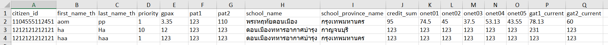

<div class="outline grid">
  <div class=" md:col-12 lg:col-12 sm:col-12">
    <p-card class="">
      <ng-template pTemplate="header" >
        <p style="font-size: 2em;">
          นำเข้าข้อมูลไฟล์ XLSX
        </p>
      </ng-template>
      <div>
        <p>โปรดดูตัวอย่างคอลลัมไฟล์ในการเลือกนำข้อมูลเข้า</p>
        
        <p-divider align="left" type="dashed" ><b>ไฟล์ตัวอย่าง</b></p-divider>
        <p-button label="ดาวโหลดไฟล์ตัวอย่าง" (onClick)="downloadFileSample()" icon="pi pi-download" iconPos="left"></p-button>
      </div>
      <p-divider align="left" type="dashed" ><b>อัพโหลดไฟล์</b></p-divider>
      <div>
        <input type="file" id="file" accept=".xlsx" (change)="onBasicUploadAuto($event)" multiple="false">
        <label for="file"><i class="pi pi-upload" style="margin-right: 1em ;"></i> โปรดเลือกไฟล์</label>
        <!-- <span class="material-icons">face</span> mat icon  -->
      </div>
       <!-- <table>
         <tbody>
           <tr *ngFor="let row of data">
              <td *ngFor="let cell of row">
                  {{cell}}
              </td>
           </tr>
         </tbody>
       </table> -->

    </p-card>
  </div>

</div>
<!-- <p-toast></p-toast> -->
